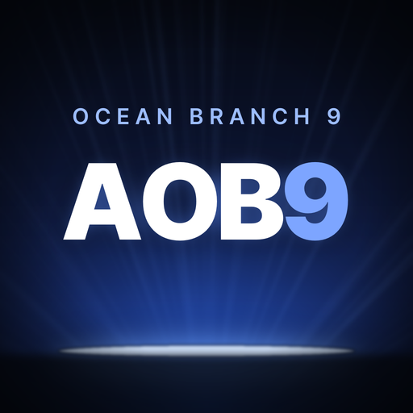

AOB9 PC 프로그램 받기
윈도우 PC용 설치 파일입니다.
아래 파란 버튼을 눌러 받아 주세요.
- 받은 MH-Analyzer-setup.exe를 엽니다. (크롬 오른쪽 위 ⬇ 다운로드 목록에서 누르면 됩니다)
- 파란 창 “Windows의 PC 보호”가 뜨면 추가 정보 글자 → 아래 실행 버튼.
- 설치가 끝나면 바탕화면 AOB9을 열고, 관리자에게 받은 OTP를 넣으면 끝입니다.
처음 한 번만 설치하면 됩니다. 새 버전은 프로그램을 켤 때 자동으로 안내됩니다.
휴대폰 앱은 휴대폰에서 이 주소를 열면 자동으로 안내됩니다.